千葉県銚子市 前宿町 / 銚子 カフェ・パンケーキ
海のある町の、
ちいさな一皿。
小さなパンケーキの店Miyukicafeの試作サイトです。電話番号・住所・Instagramなど、確認できる情報をそのままご案内します。
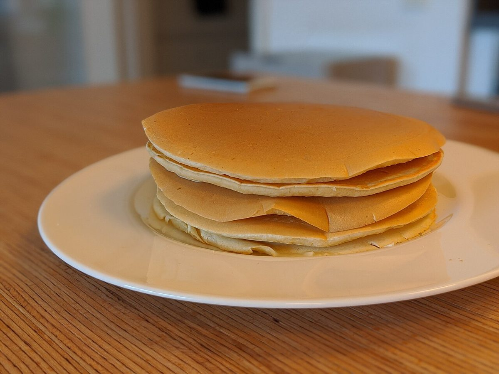
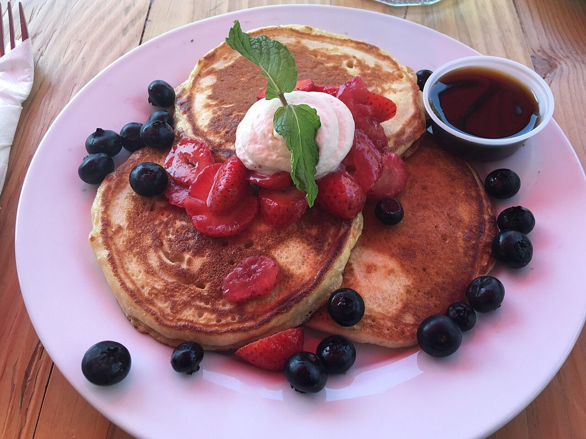
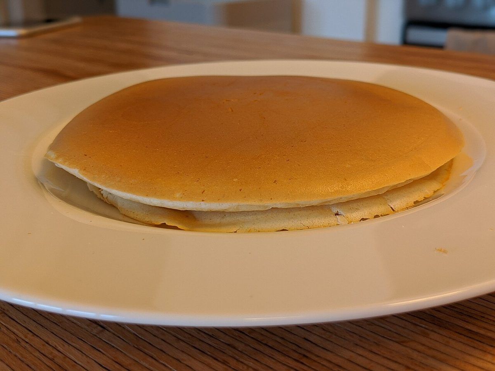
ひと言
潮のにおいのする町で、手のひらサイズの甘い一皿をゆっくり。
そんな時間を思い描いて、このサイトをつくりました。
「海のある町の、ちいさな一皿」は制作側の案です。お店の公式なコンセプトではありません。
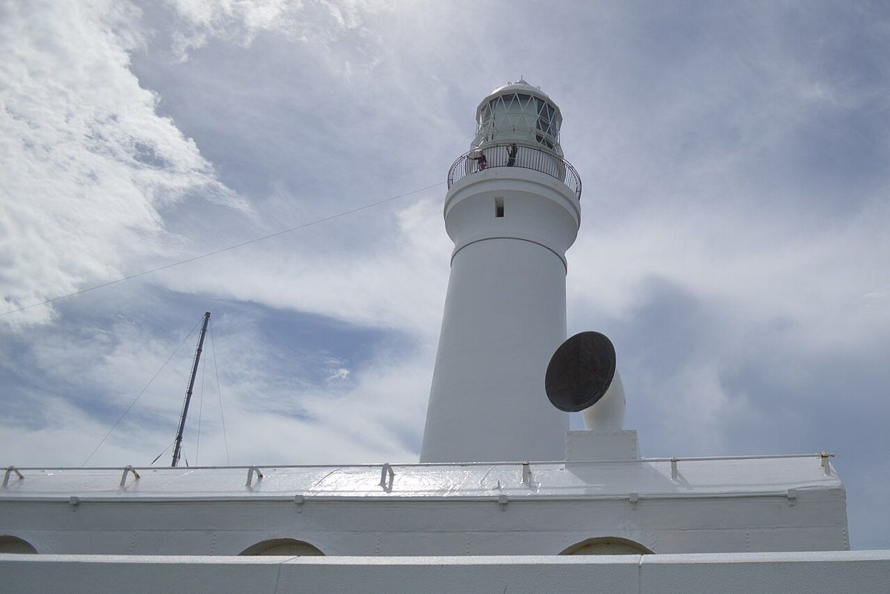
銚子の景色のイメージ
千葉県銚子市で撮影されたフリー素材です(お店の周辺とは限りません)。横にスワイプできます。
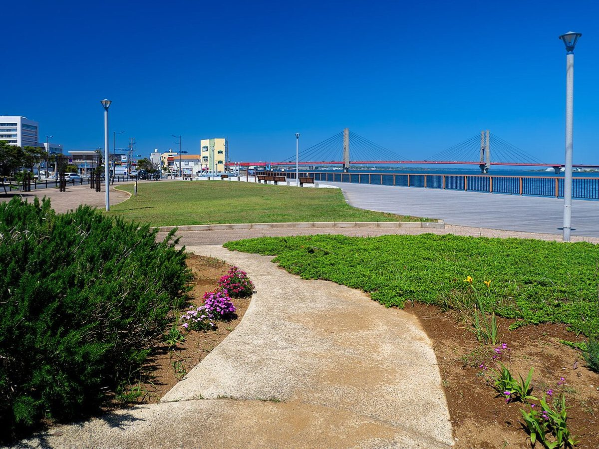
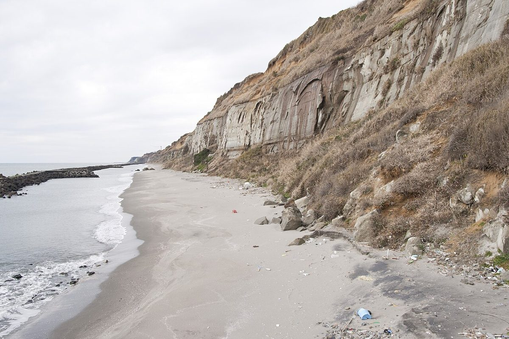
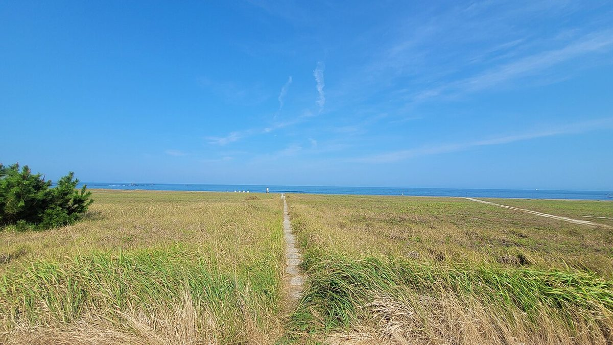
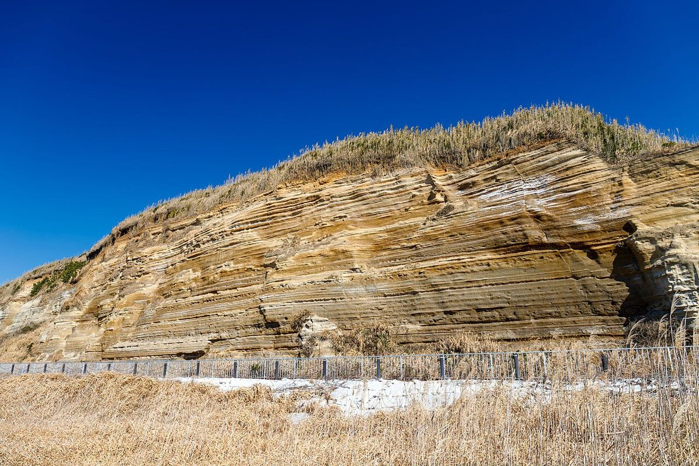
パンケーキのイメージ写真
すべてフリー素材のイメージです。お店で取り扱う内容を示すものではありません。
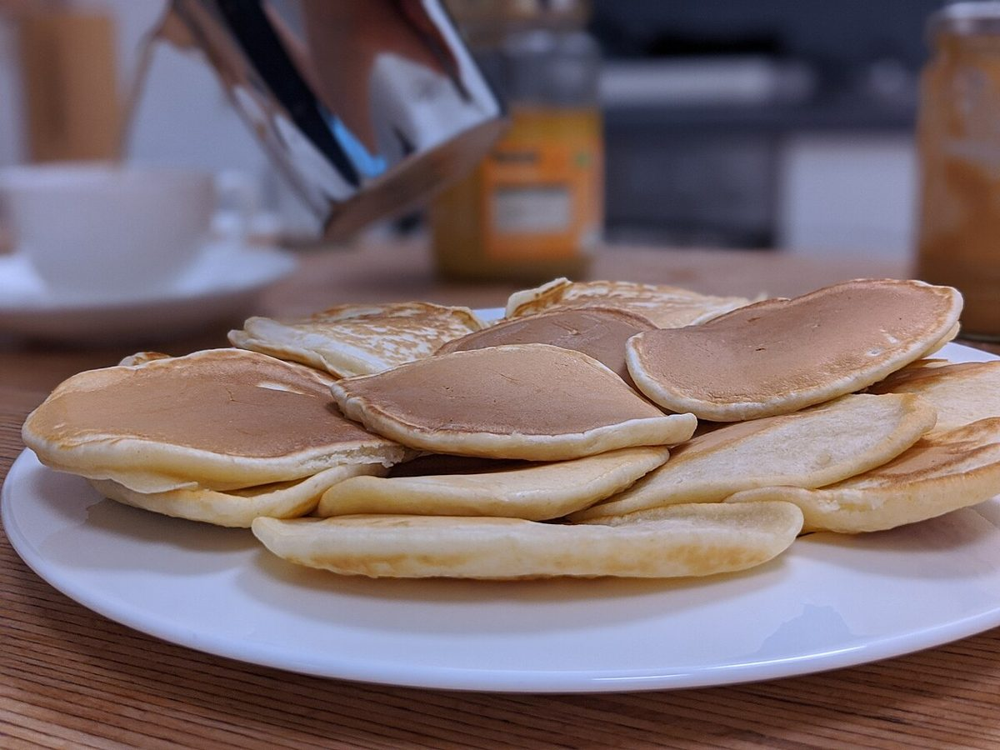
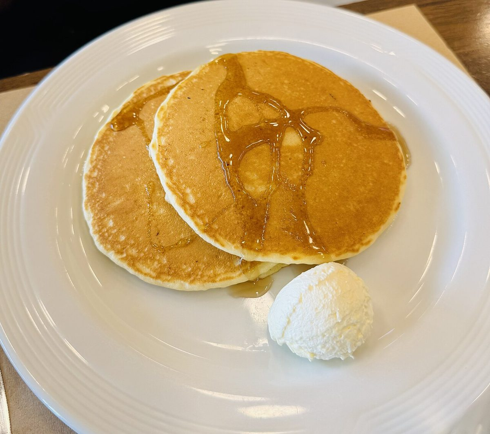
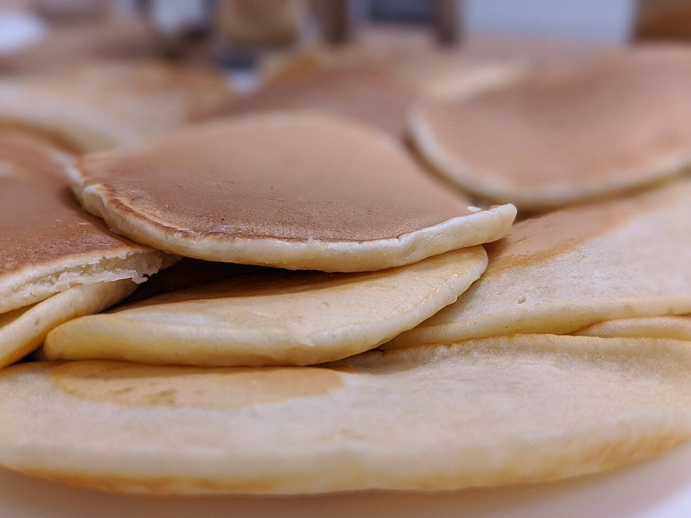
ご案内
- 所在地
- 千葉県銚子市前宿町698
- 営業時間
- 準備中(お問い合わせください)
- 定休日
- 準備中(お問い合わせください)
- @miyuki_cafe_pancake
お問い合わせは電話かInstagramで
営業時間やメニューなど、気になることはお気軽にどうぞ。
080-5442-2272